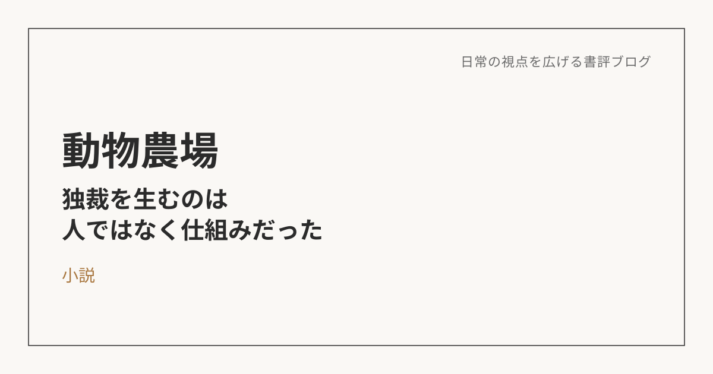
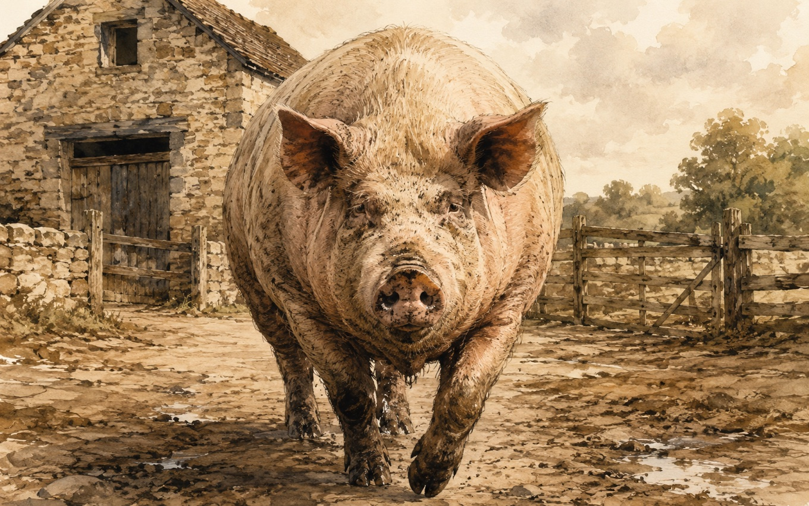

動物農場――独裁を生むのは、人ではなく仕組みだった
この本について
ジョージ・オーウェルによる本作は、動物たちが人間の農場主を追い出し、自分たちだけの理想郷を作ろうとする寓話小説。しかし指導者となった豚のナポレオンたちは、次第に人間と同じような支配者へと変質していく。独裁体制が生まれていく過程を、動物たちの姿を借りて風刺的に描いた一冊。
独裁が生まれる5つの条件
物語を読み進めながら、権力集中による独裁体制がどのように生まれていくのかが、風刺を通して見えてきた。整理すると、独裁を生む要素はいくつかに分解できる。
まず「責任の大きさ」。誰よりも頭を使って理想像を描き、努力しているという自負があると、他の者よりも良い環境にあるのは当然だという感覚が生まれる。次に「決めたルールを捻じ曲げられる権力」。物語には、当初決めた規則や理念が、自分たちの都合のいい形にいつの間にか書き換えられていく描写が繰り返し出てくる。そして「暴力で解決できるという選択肢」。ナポレオンの周りにいる犬たちがその役割を担い、他の動物が不平不満を口にして反旗を翻そうとしたときに、それを押さえつける力になっている。さらに「権力が正当であると伝え続けるメディア」。豚のスクィーラーが、ナポレオンの言動を都合よく正当化し、他を悪者に仕立てて触れ回る、プロパガンダの役割を果たす。最後に「第三者による監視と介入の不在」。これを止める外部の目がないことが、豚たちの暴走をさらに加速させてしまう。この5つが重なることで、独裁者・独裁体制が生まれていくように見える。

ナポレオンが悪なのか、それとも環境が悪なのか
ここから一歩踏み込んで考えると、そもそもナポレオンという個体が悪だったのか、それともこうした要素が重なる環境そのものが悪だったのか、という問いが浮かんでくる。仮にナポレオンではなく、もう一頭の豚スノーボールが指導者の座についていたとしても、同じことが起きたのではないか。そう考えると、特定の誰かの資質より、環境の重なりの方が原因である可能性は高いように思える。
独裁を防ぐには――構造そのものを設計する
人ではなく環境が原因だとすれば、対策として、まず先に挙げた要素を排除していくことになる。ただし、排除すべき要素とそうでない要素はきちんと分けて考える必要がある。「責任の大きさ」自体は悪ではなく、むしろ必要な要素だ。問題は、誰も逆らえずに自由に振る舞える、権力が一つに集中する構造そのものにある。だとすれば、指導者の立場をいつでも別の誰かに代替できること、そして周囲の動物たちがその指導者を罷免できることを、仕組みとして最初から用意しておくことが、対策として大きな意味を持つ。
人は仕組みがなければ堕落するのか
この本から得られる学びを、日常の行動につなげるとしたらどうなるか。性善説・性悪説という単純な二分にはしたくないが、人は自由に、好き勝手にさせておくと、どうしようもない方向に流れてしまう存在なのかもしれない。それを堕落させないためには、そうならないための仕組みや環境が先に整備されている必要がある。
これは仕事や日常にもそのまま置き換えられる話だと思う。仕組みが整っていなければ、人はさぼってしまうし、やるべきことをやらなくなるし、だらけてしまう。そうならないために、会社のマネジメントがどう機能するかを設計しておく必要がある、というのは、動物農場が描いた独裁の構造と、根っこの部分でかなり似ている。個人の資質や善意に期待するのではなく、堕落や暴走を防ぐ仕組みそのものを先に用意しておく。この本が教えてくれたのは、そういう視点だった。
※本記事はNotionに書き溜めた読書メモをもとに、AIの編集サポートを受けて構成しています。